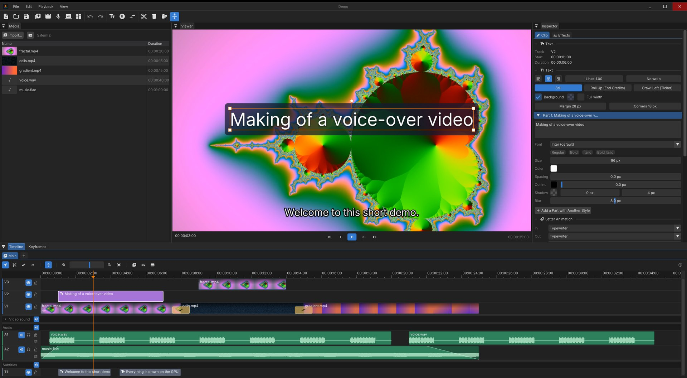
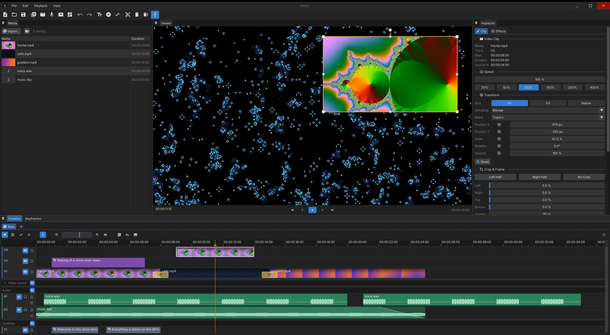
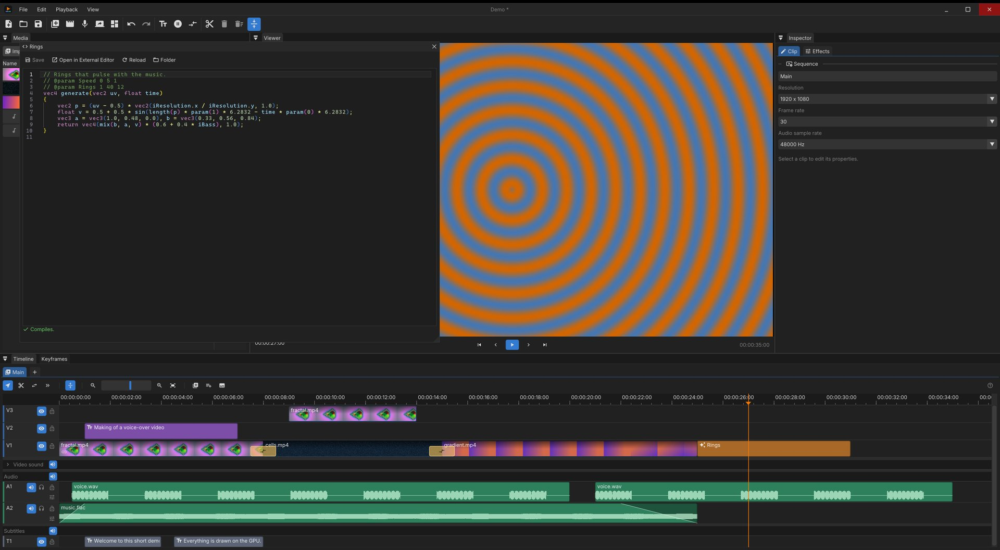
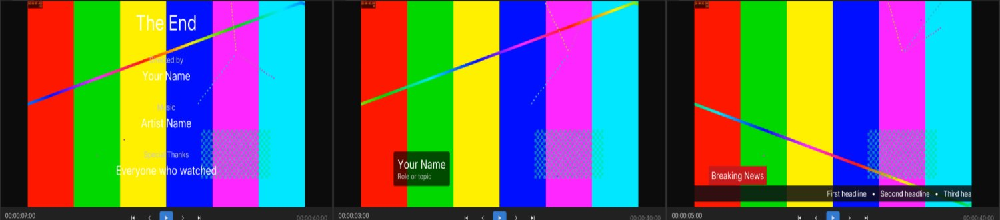

Video editing that is quick,
without giving up power.
QuickEdit is a free video editor for Windows and Linux, made for videos built around a voice-over: record and clean the voice, put music under it, and screen captures, videos and animated texts over it. Everything is drawn on the GPU with Vulkan.
Free and open source (BSD 3-Clause) · All releases
The trailer was edited in QuickEdit, by an AI assistant through its MCP server.

Everything a voice-over video needs
The tools you reach for every day are one click or one key away. The deeper ones are there when you need them.
A real timeline
Video, audio and subtitle tracks, snapping, ripple delete, linked picture and sound, blade, slip and select-forward tools, clip speed, freeze frames and nested sequences.
GPU from end to end
Decoding with Vulkan Video, compositing, effects and encoding (Vulkan Video, NVENC, AMF) without the pictures ever leaving the graphics card.
Recording built in
Voice-over, screen, window or camera, with the sound of the computer. Record several sources at once as a scene, each on a track of its own.
Texts and titles
Rich text edited right in the viewer, with per-letter animations, backgrounds, shadows, rolling credits and tickers.
Sound that sounds right
Waveforms, fades, VST3 effects per clip and per track, scrubbing, and loudness normalization at export.
Subtitles from speech
Generate subtitles from the voice with whisper.cpp on the GPU, import and export SRT, or burn them into the picture.
Pictures, placed precisely
Every clip has a transform and a frame, animated with keyframes and curves.
- Position, scale, rotation, opacity with keyframes
- Crop, rounded corners, border, shadow for picture-in-picture
- Fit, fill or native size; bilinear, bicubic, Lanczos or nearest sampling
- Video effects: color, blur, sharpen, vignette, chroma key, pixelate

Transitions and shaders
Dissolve, dip to black, push, wipe and zoom are built in. Need something else? Write it.
- Generators, transitions, blend modes and resampling are GLSL shaders
- A built-in editor compiles them as you type
- Shaders can follow the sound: level, bass, mid and treble

Titles in a click
End credits, lower thirds and news tickers, ready to fill in, every letter animated.

Let an AI assistant edit with you
QuickEdit can run a Model Context Protocol server on your own computer. An assistant such as Claude then sees your project and edits it live: clips, texts, titles, transitions, effects, subtitles, shaders it writes itself, export.
Each of its edits is a step of the history, undone like any other. How to set it up
claude mcp add --transport http quickedit http://127.0.0.1:8765/mcpGet QuickEdit
64-bit Windows or Linux, with a GPU that supports Vulkan 1.3. Hardware video decoding and encoding are used when the GPU has them.
New to QuickEdit? The guide takes you from the first import to the export.